Walker's Haute Route
Mont Blanc to the Matterhorn across eleven alpine passes.
Walker's Haute Route crosses France / Switzerland for 180 km and ends at Zermatt. You begin at Chamonix. Watch Walks moves you along it with the steps you already take, so it's about 7 weeks at 5,000 steps a day. Here are its 17 landmarks, in the order you meet them, photographed and written up.
- 180km end to end
- 17landmarks
- 7 weeksat 5,000 steps a day
- Zermattfinishes at

The landmarks of Walker's Haute Route
17 landmarks, in walking order. Each photograph is by the person credited beneath it, used as they licensed it.
-
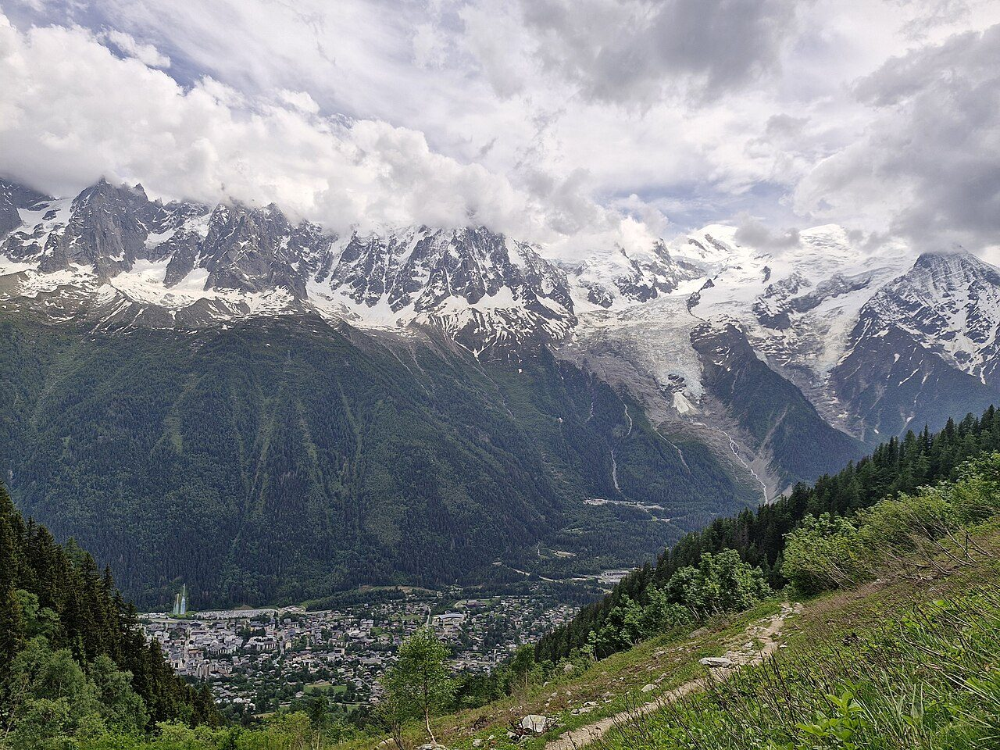
Photo: Zakmeadows01 · Wikimedia Commons, CC BY 4.0 Chamonix
Mont Blanc hangs white above the rooftops of Chamonix, the valley town at 1,035 metres where alpinism was born. Ahead of the Walker's Haute Route lie eleven high passes and nearly a fortnight of walking east to Zermatt. The Matterhorn, the trail's distant goal, stays hidden behind the ranges. From here the route climbs away from the massif toward the frontier.
-
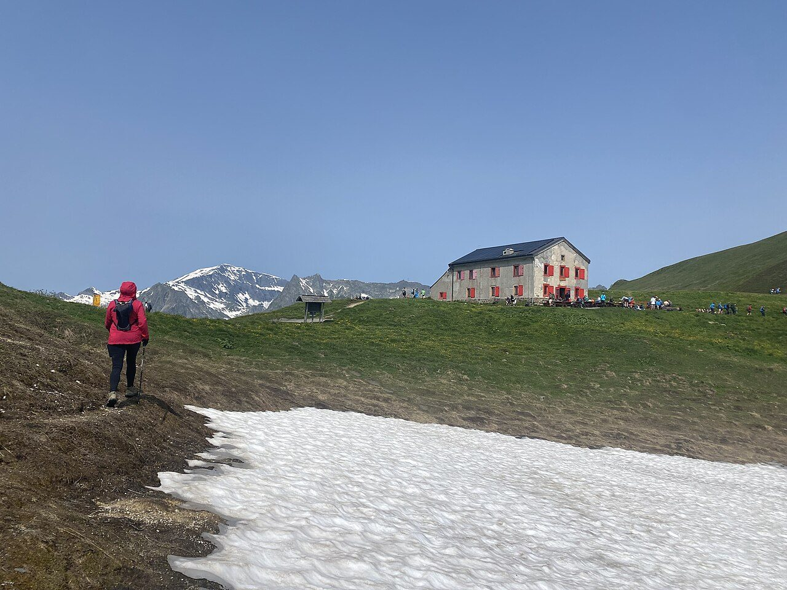
Photo: Victoria Lunyak · Wikimedia Commons, CC BY-SA 4.0 Col de Balme
The climb from Le Tour tops out at 2,191 metres, where the border runs along the ridge — France behind, Switzerland ahead. To the west the whole Mont Blanc massif fills the sky, glaciers spilling toward the valley; to the east Swiss meadows fall away toward Trient. A small refuge on the saddle serves coffee before the long descent.
-
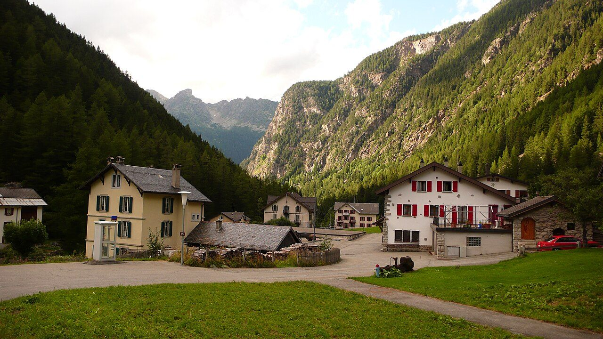
Photo: Nicolas Vigier · Wikimedia Commons, CC BY 2.0 Trient
A pink chapel marks the hamlet of Trient, set in its wooded valley at around 1,300 metres. The Glacier du Trient hangs pale above the trees, and the village makes a natural halt before the next climb. From here the traverse splits — the brutal Fenêtre d'Arpette or the gentler Bovine path over the Col de la Forclaz.
-
Col de Prafleuri
Scree and old snow lead to this stony notch at 2,965 metres, one of the highest crossings on the whole walk. No trees, no soft ground — only shattered rock and the whistle of wind. Marmots watch from the boulders. Below, the path drops toward a hut wedged in the moraine, and the great dam of the Dix still lies hidden ahead.
-
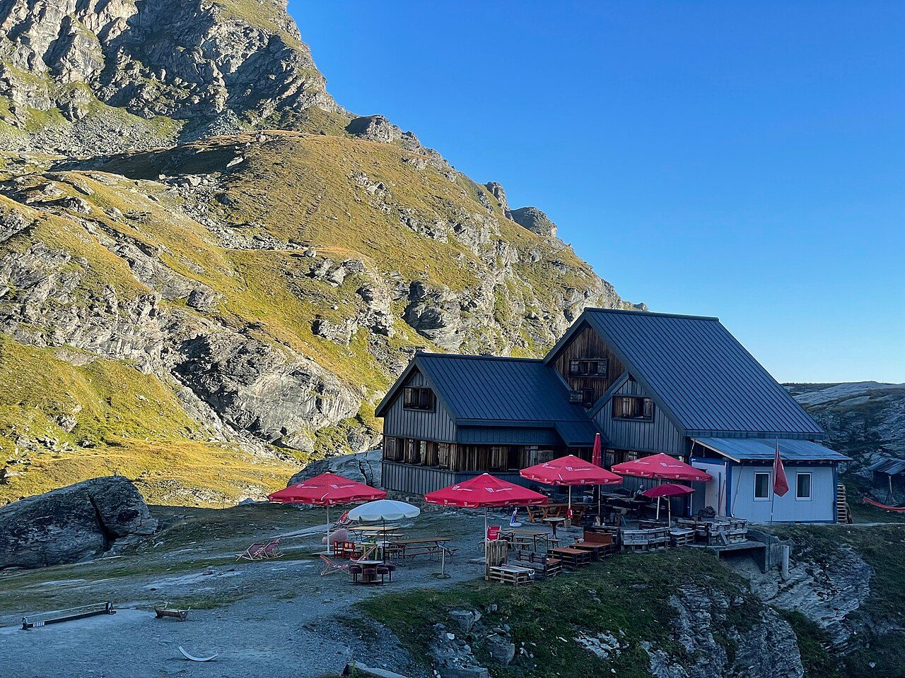
Photo: Daanvr · Wikimedia Commons, CC BY-SA 4.0 Cabane de Prafleuri
Set in a bowl of grey moraine at 2,624 metres, the hut appears like a lifeline after the col. Boots come off, soup arrives, and walkers trade notes on tomorrow's weather. The Grande Dixence dam waits an hour or two north. For now the ridges glow amber, and the dormitory fills with the quiet breathing of tired legs.
-
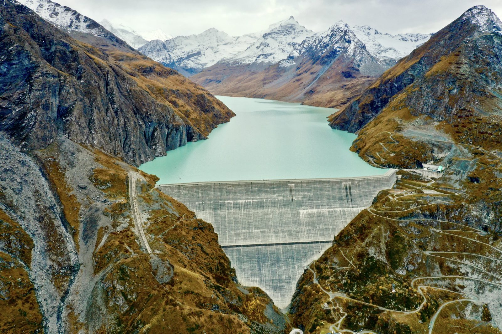
Photo: Jérémy Toma · Wikipedia, CC BY-SA 4.0 Lac des Dix
A long turquoise reservoir runs below, held back by the Grande Dixence, the tallest gravity dam on earth at 285 metres. Meltwater from thirty-five glaciers feeds this cold, still lake at 2,364 metres. The trail traces its western shore for hours, the Pigne d'Arolla gleaming ahead, before the ground tilts up again toward the day's high col.
-
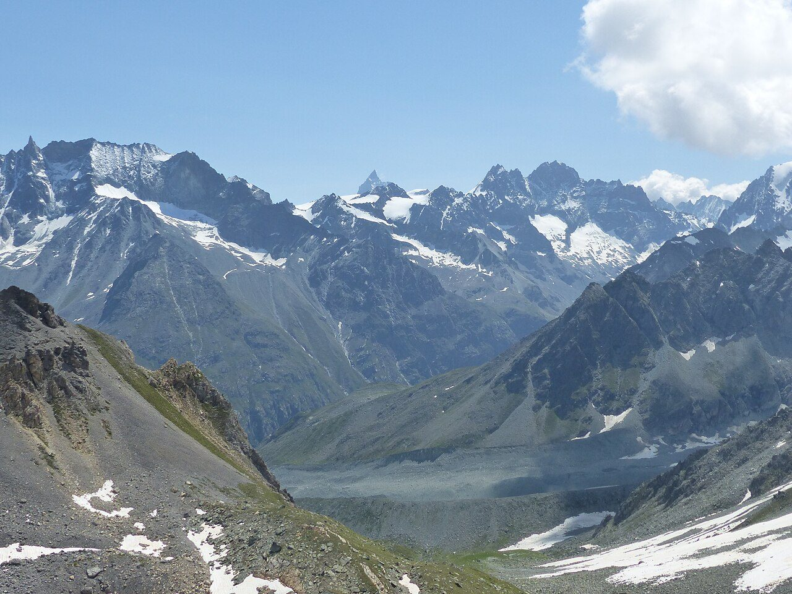
Photo: Whgler · Wikimedia Commons, CC BY-SA 4.0 Col de Riedmatten
A steep gully of loose earth leads to this narrow gap at 2,919 metres. Just to the south, the steel ladders of the Pas de Chèvres cling to their cliff — the ridge's twin crossing. Either gap earns the same reward: the Val d'Arolla opening below, the Pigne and its glaciers filling the head of the valley in sharp morning light.
-
Arolla
One of the highest villages in the Alps, Arolla sits at around 2,000 metres beneath a wall of ice and rock. Larch forest surrounds a shop, beds and hot food — small luxuries after the passes. The Pigne d'Arolla and Mont Collon loom over the roofs. Roughly halfway along the traverse, the route turns east here toward the Val d'Hérens.
-
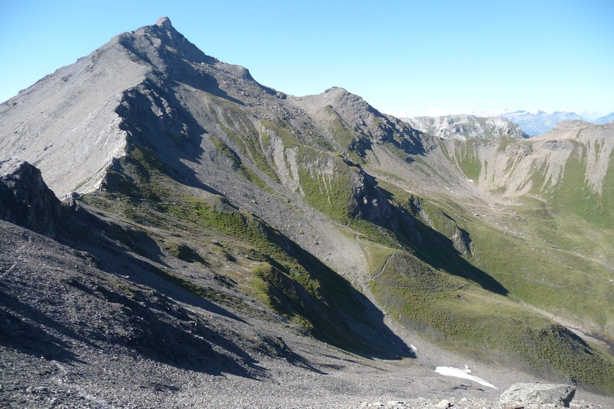
Photo: Fipsinger · Wikimedia Commons, CC BY-SA 3.0 Col de Torrent
From La Sage the climb is relentless, grass giving way to stone until the cairn at 2,916 metres. Behind, the Dent Blanche throws its enormous shadow; ahead, the Lac de Moiry glints improbably blue far below. This is a walker's pass through and through — no ladders, no glacier, just legs and a long, patient ascent well rewarded.
-
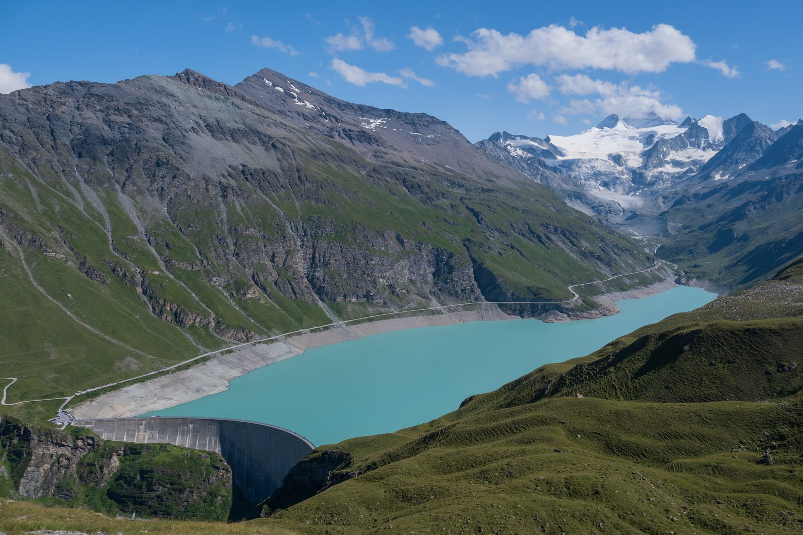
Photo: Christian David · Wikipedia, CC BY-SA 4.0 Lac de Moiry
The trail contours high above the milky Lac de Moiry, another glacial reservoir, with the option to climb to the Cabane de Moiry and its tumbling icefall. The Moiry glacier cracks and groans in the afternoon heat. Streams here run grey with rock flour, and the path presses on toward the Sorebois ridge.
-
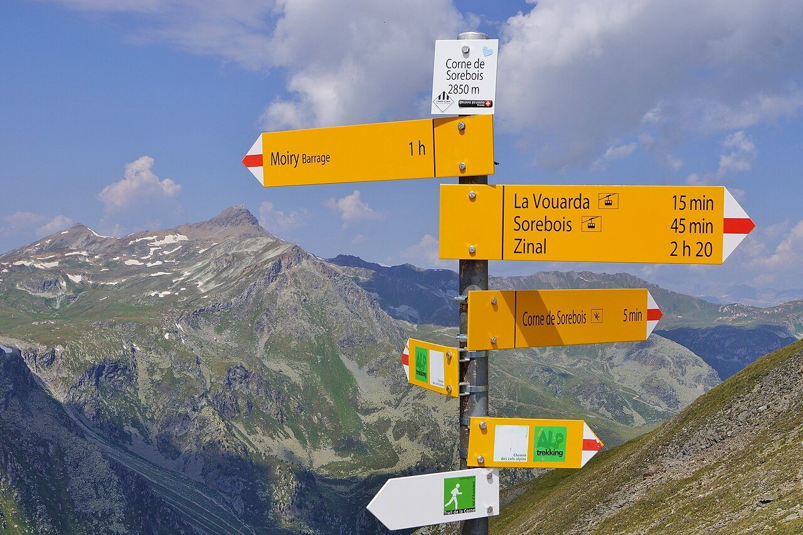
Photo: FkMohr · Wikimedia Commons, CC BY-SA 3.0 de Col de Sorebois
A cable car rises to Sorebois for those who have had enough, but the col itself is reached on foot at 2,847 metres. The whole Val de Zinal unfolds beneath, and at its head stands the imperial ring of peaks — the Weisshorn, Zinalrothorn and Obergabelhorn. Beyond the col begins the long, knee-jarring drop into Zinal.
-
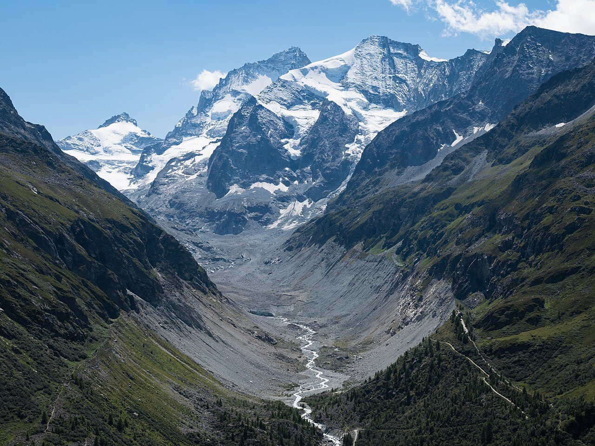
Photo: Christian David · Wikimedia Commons, CC BY-SA 4.0 Zinal
A quiet mountaineering village at 1,670 metres, Zinal gathers beneath the Imperial Crown — five of the Alps' great four-thousanders, among them the Weisshorn and Dent Blanche. Chalets, a church and the rush of the river Navisence fill the valley floor. German-speaking Switzerland lies close, though the signs here still read French; the Forcletta pass ahead marks that linguistic border.
-
Forcletta
The Forcletta, at 2,874 metres, is where French Switzerland ends and German begins. Beyond the grassy saddle the place names themselves change tongue — vallon becomes tal, alpage becomes alp. Cattle graze the high pastures with heavy bells. The hidden Turtmanntal drops away beyond, remote and green, toward the tiny hamlet of Gruben.
-
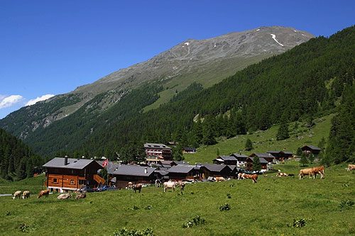
Photo: Roland Zumbühl (Picswiss), Arlesheim (Commons:Picswiss proje · Wikipedia, CC BY-SA 3.0 Gruben
Deep in the Turtmanntal, Gruben-Meiden is barely a cluster of buildings at 1,822 metres, its old hikers' hotel serving the passing trade. The only way onward is over the Augstbordpass. German is spoken here now. Ringed by steep slopes, the valley feels far from anywhere — and it is.
-
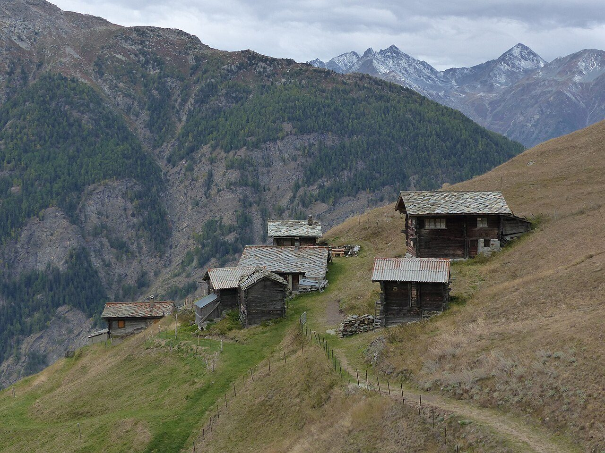
Photo: Whgler · Wikimedia Commons, CC BY-SA 4.0 Augstbordpass
The last great col of the traverse waits at 2,894 metres, reached across a chaos of boulders. Beyond it everything shifts: the Mattertal opens to the east, revealing for the first time the peaks that guard Zermatt. A long, rocky descent to St Niklaus begins here. The Matterhorn stands close now — a single valley away.
-
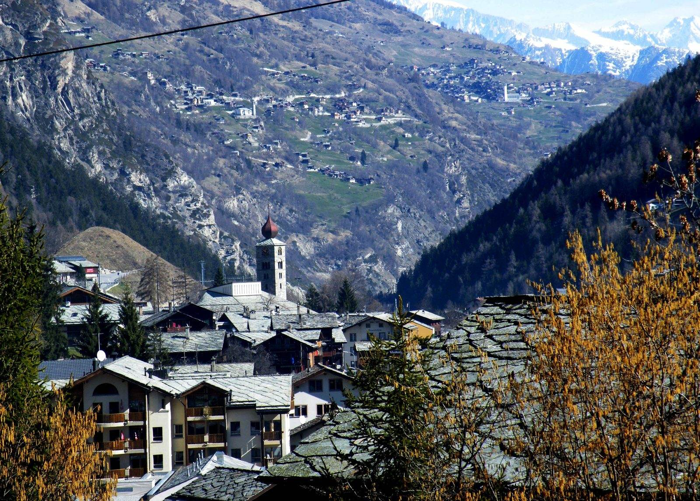
Photo: Roy Lindman (Roylindman at en.wikipedia) · Wikipedia, CC BY-SA 3.0 St Niklaus
At 1,127 metres, St Niklaus sits in the deep Mattertal, its church spire sharp against the valley walls. It is the lowest point in days and the last town before the finish. Trains rattle up toward Zermatt, though the trail keeps to foot. One more climb and one more valley remain, the mountain waiting at their head.
-
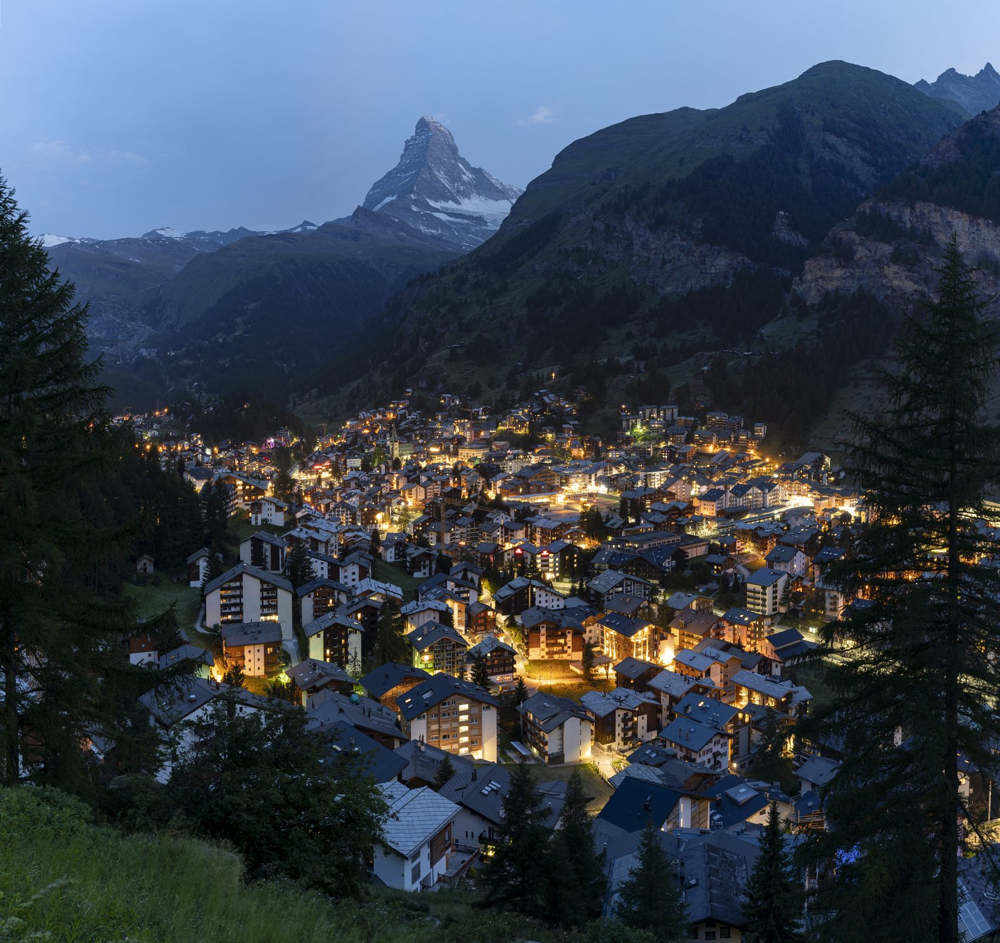
Photo: Chensiyuan · Wikipedia, CC BY-SA 4.0 Zermatt
Above the car-free streets it appears at last — the Matterhorn, 4,478 metres of near-vertical rock, the peak that draws the whole route east for 180 kilometres. Eleven high passes, glaciers, dam-lakes and two languages lie behind. From the Mont Blanc massif to the foot of the Matterhorn, the Walker's Haute Route ends in Zermatt, one of the great mountain traverses of the Alps complete.
Walking the Walker's Haute Route
Your watch is already counting these steps. Watch Walks spends them on the Walker's Haute Route, all 180 km of it, and hands you each landmark as you reach it. There's no route recording, no account and no ads. The Inca Trail is free; this one is a one-time purchase with no subscription.
Other trails in Europe
- Camino de Santiago 780 km · Spain
- Length of Britain 1,745 km · United Kingdom
- GR20 180 km · Corsica (France)
- Tour du Mont Blanc 170 km · France/Italy/Switzerland
- West Highland Way 154 km · Scotland
- Kungsleden (The King's Trail) 440 km · Sweden